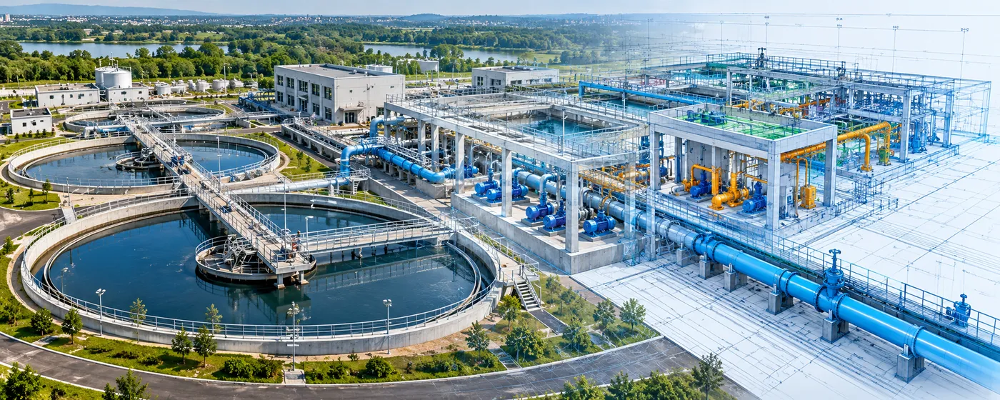

The Assignment
Water and wastewater infrastructure projects require coordinated engineering across multiple disciplines to ensure that treatment facilities, pipelines and associated systems are technically sound, constructible and suited to project requirements.
The assignment involved providing multidisciplinary detailed design and engineering support covering process, civil and structural, electromechanical and pipeline systems for water and wastewater infrastructure, together with the engineering documentation required for project development and implementation.
Our Approach
CS TECH Ai combines water-domain expertise with integrated engineering workflows and specialist design applications to develop coordinated engineering solutions across the project lifecycle.
The engagement included:
- Detailed design and engineering of Water Treatment Plants (WTP), Sewage Treatment Plants (STP) and Effluent Treatment Plants (ETP)
- Process design based on an understanding of physicochemical and biological processes
- Preparation of process designs and engineering drawings
- Civil and structural design and drawings
- Electromechanical design and drawings
- Mechanical and electrical engineering analysis
- Piping and instrumentation engineering
- Design of water pipeline networks using WaterGEMS
- Preparation of Detailed Project Reports (DPRs) and pre-feasibility reports
- Project-management support and associated engineering documentation
The detailed engineering process builds on the basic design using integrated engineering workflows across mechanical, electrical, piping, instrumentation and civil disciplines.